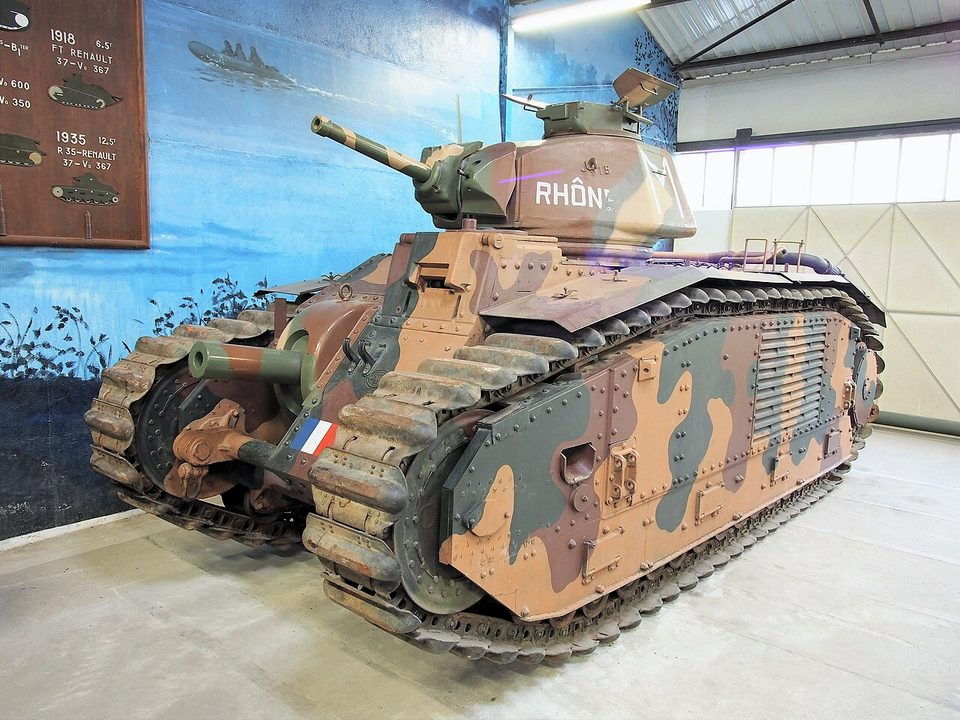

Francia, 1940: los carros de una derrota inesperada
Los carros de la campaña de Francia de mayo y junio de 1940: por qué Alemania venció con carros inferiores a muchos de los franceses y británicos, y los combates de Hannut, Stonne, Arras y Sedán.

Mejores carros, peor organización
En mayo de 1940 Francia tenía algunos de los carros mejor blindados del mundo, como el Char B1 bis y el Somua S35. Alemania atacó en gran parte con carros ligeros, como el Panzer II, el Panzer I y el checoslovaco Panzer 38(t), además del Panzer III y el Panzer IV.
La diferencia estuvo en el empleo. Los carros alemanes llevaban radio y estaban concentrados en divisiones acorazadas. Muchos carros franceses, como el Renault R35 y el Hotchkiss H35 y H39, estaban repartidos en pequeños batallones de apoyo a la infantería, con el jefe solo en la torreta y, a menudo, sin radio.
Hannut y Stonne
Entre el 12 y el 14 de mayo, en Hannut (Bélgica), tuvo lugar el mayor choque de carros de la campaña. Los Somua S35 se mostraron superiores a los Panzer III y IV en blindaje y potencia de fuego, aunque las unidades francesas acabaron retirándose.
El 16 de mayo, en Stonne, el Char B1 bis «Eure» del capitán Pierre Billotte destruyó trece carros alemanes y volvió a sus líneas tras recibir unos 140 impactos sin que ninguno perforase su blindaje.
Arras y Sedán
El 21 de mayo, en el contraataque británico de Arras, los Matilda I y Matilda II resistieron el fuego de los cañones contracarro alemanes de 37 mm. Solo la artillería y los antiaéreos de 88 mm empleados a tiro directo lograron detenerlos.
Frente a la ruptura alemana de Sedán contraatacaron sin éxito los FCM 36. Los Char D2 también combatieron contra la invasión, y la mayoría se perdió.
El resultado
Los británicos perdieron en Francia 331 carros ligeros Light Tank Mk VI, su carro más numeroso. Muchos Char B1 se perdieron por averías o falta de combustible más que por el fuego enemigo. La campaña demostró que la organización, la radio y la concentración pesaban más que el blindaje.
Artículo elaborado a partir de las fichas de esta enciclopedia, donde se citan las fuentes de cada dato.